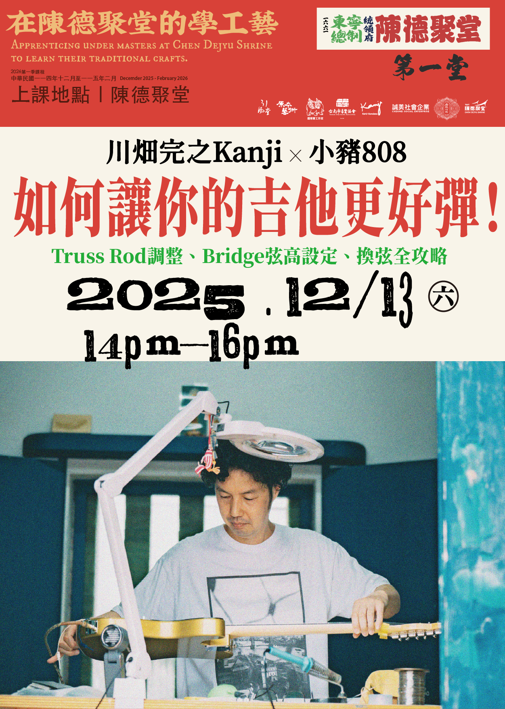
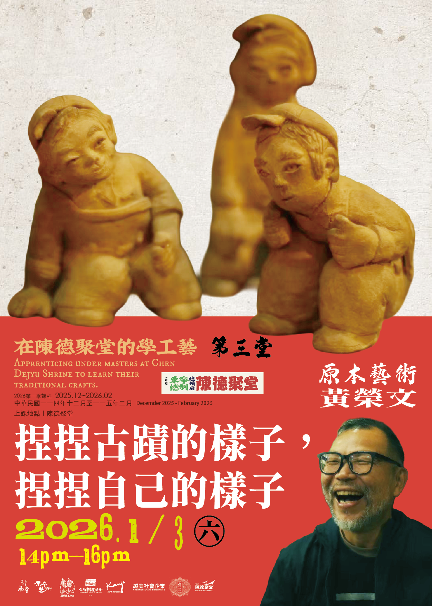
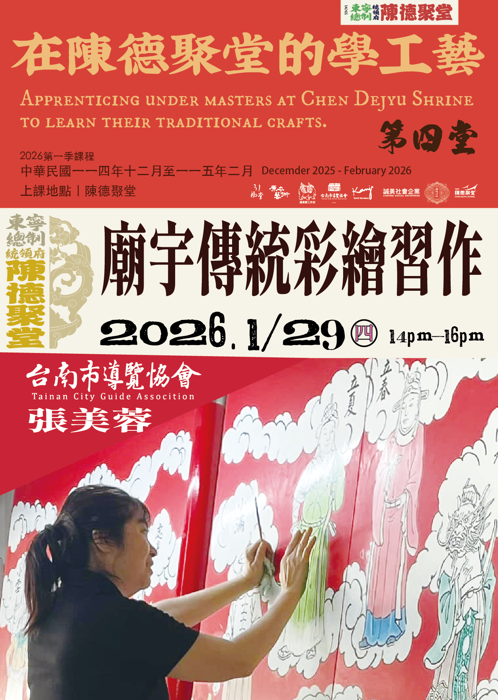
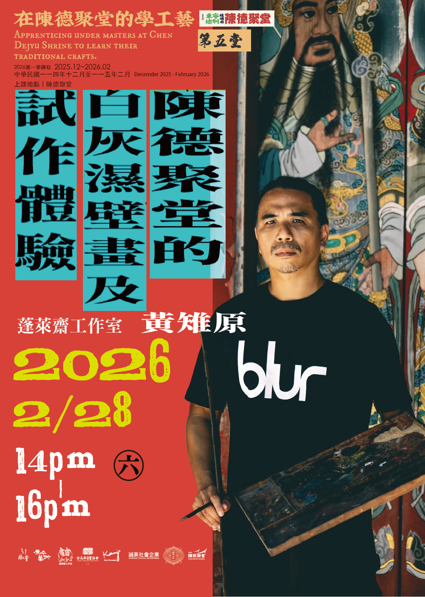

主辦單位｜陳德聚堂
執行單位｜誠美社會企業、府城甘哉
進駐藝術家｜臺南市導覽協會、蓬萊齋工作室、川畑完之、引風堂種子創作、原本藝術

天氣有乾燥的時候、有潮溼的時候、有悶熱的時候、有寒冷的時候。
面對不同的天氣條件，吉他的聲音都長得不一樣，一名專門的樂手如何學會因著環境不同來調整自己的樂器，時時刻刻保持最佳的演奏狀態...是看起很簡單的事情，但實際上是非常專門的工作。
臺南的樂器行比便利商店多，在臺灣那麼多人喜歡樂器（完之老師的觀察）。但是對於一把琴的聲音是否好聽，可能會比較不知道如何辨別。
那麼，在對樂器的理解上若是要更加深刻（既然大家那麼愛買樂器的話），學會聽懂琴音的表現、學習識別一把好琴與彈好一種樂器，深化樂手的音感判斷技巧，是非常重要的專業知識。

人們在古蹟裡會變成不同的樣子，一座古老的房子也有好多的樣子，天氣好的時候、天氣不好的時候，我們可以學會觀察環境、也學會觀察自己。並且完成一件作品。

對於廟宇藝術有興趣的學員。
課程內容包括廟宇彩繪技巧以及實際操作，
最後可以在木板上進行實作，讓學員親自體驗。

「濕壁畫是結合泥作與繪畫的工法，兩位匠師必須相互搭配、抓準時間，趁灰壁未全乾時畫好。本課程講解陳德聚堂的濕壁畫作法，並邀請學員一同體驗濕壁畫技術」
主辦單位｜陳德聚堂
執行單位｜誠美社會企業、府城甘哉
進駐藝術家｜臺南市導覽協會、蓬萊齋工作室、川畑完之、引風堂種子創作、原本藝術